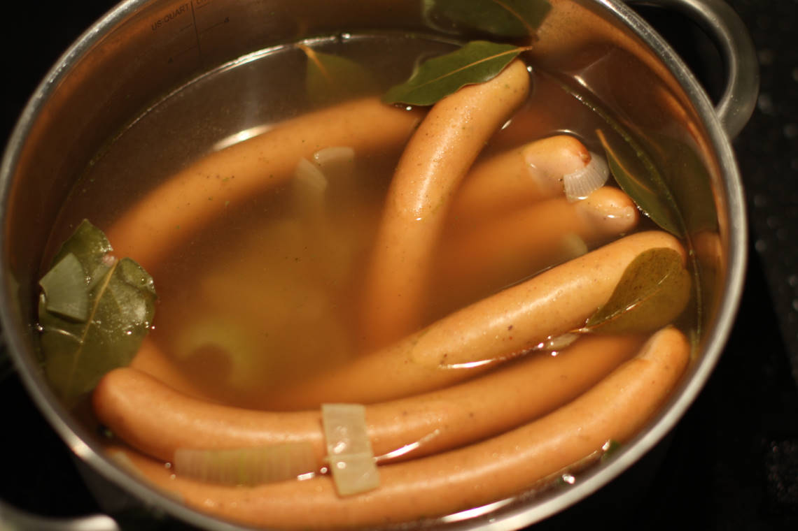

Boiled Vienna Sausages
A simple dish with lots of potential.
metadata
Created on 2019-01-02 Last updated on 2020-05-16
Source: Simon's dad
Estimated time needed: At least 29 minutes. At most 29 minutes.
Ingredients
| 750 | g | Vienna sasuages | between 500 to 1000 g should be fine for 3 liters of water | |
| 200 | g | onion | about 1 large one | |
| 30 | g | beef bouillon | or use 3 cubes if you have bouillon in cubes of 10g each | |
| 5 | leaves | bay leaves | ||
| 3 | l | water | ||
| 2 | tsp | rosemary | optional, can also be used as a substitute the bay leaves | |
| 2 | tbsp | sherry | optional | |
| 2 | tbsp | black pepper | I like using a mixture of both whole peppercorns and crushed/powdered |
Scaling
Timeline
Directions
⌛ Active time 1 minutes
- 200 g onion | about 1 large one
Chop onion
⌛ Active time 2 minutes | Passive time 15 minutes
- 3 l water
- 30 g beef bouillon | or use 3 cubes if you have bouillon in cubes of 10g each
- 5 leaves bay leaves
- 2 tbsp black pepper | I like using a mixture of both whole peppercorns and crushed/powdered
- 2 tsp rosemary | optional, can also be used as a substitute the bay leaves
- 2 tbsp sherry | optional
Season the water and bring to a boil:
Get a large pot and fill it up with water so that the sausages have plenty of room later. Don't make it too full though, to avoid splashing while boiling up and so that there is also room left for the sausages. For this recipe I usually use 3 liters of water in a pot that fits 5 liters (if filled to the brim). I'd also recommend using a pot that you have a lid for, as it makes the simmering later go smoother. When you got the pot ready and filled with water add the chopped onion and other seasonings. Then turn the heat up and wait for it to start boiling.
⌛ Active time 1 minutes | Passive time 10 minutes
- 750 g Vienna sasuages | between 500 to 1000 g should be fine for 3 liters of water
Simmer the sausages:
When the water has boiled up remove the pot from the heat, add the sausages, put the lid on, and let the sausages simmer. How long this takes depends on the sausages. If they are thin and not raw (as for instance you typpical Vienna sasuages) you can probably get away with letting them sit for about 5 to 10 minutes. If they are thicker they will need more, and if they are raw they will probably need much more. (Although I have never really boiled high quality raw sasuages, as I think, in general, good raw sasuages will turn out better if fried.)